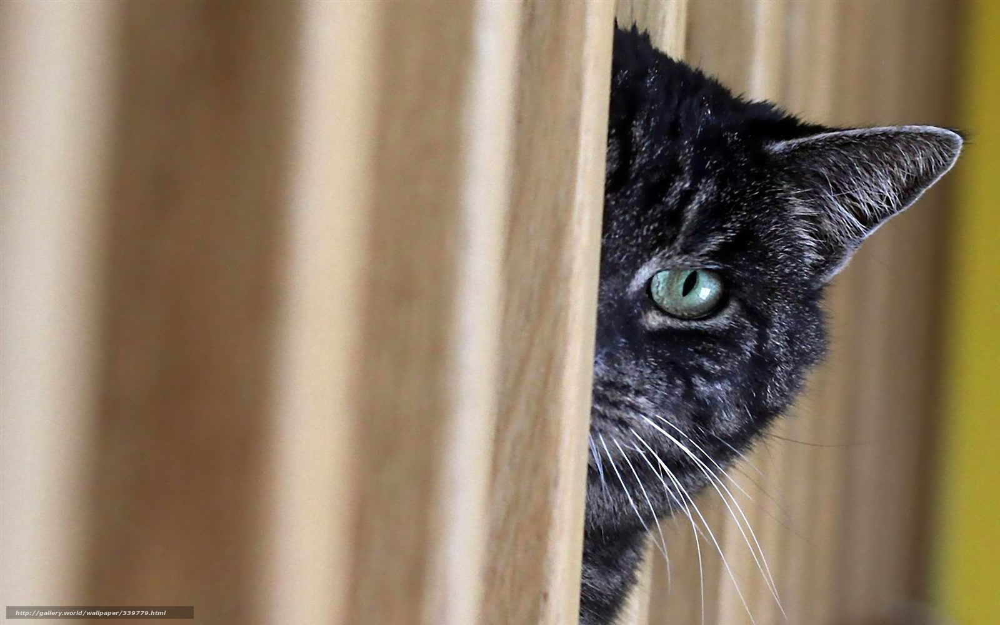
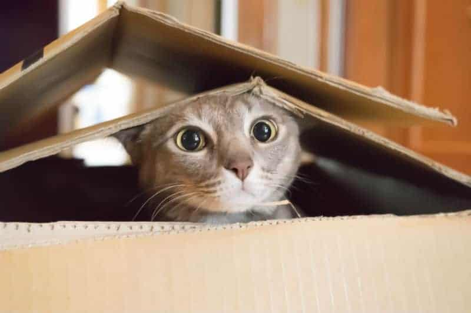
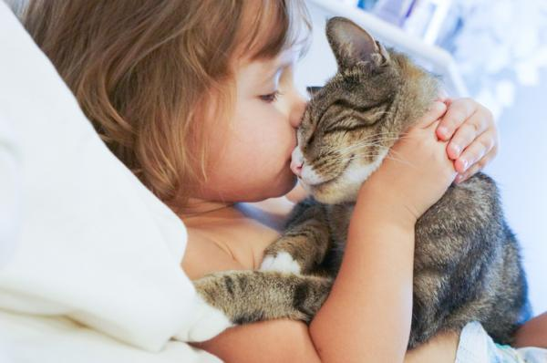
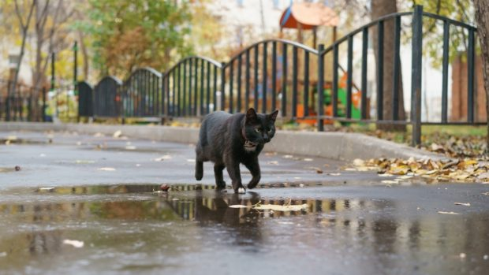
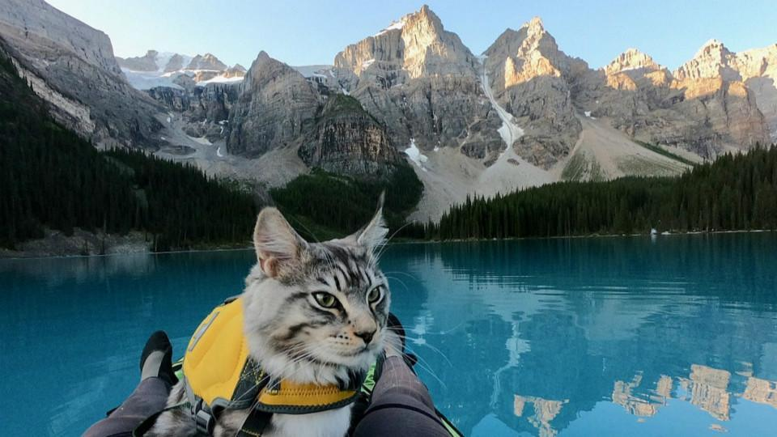
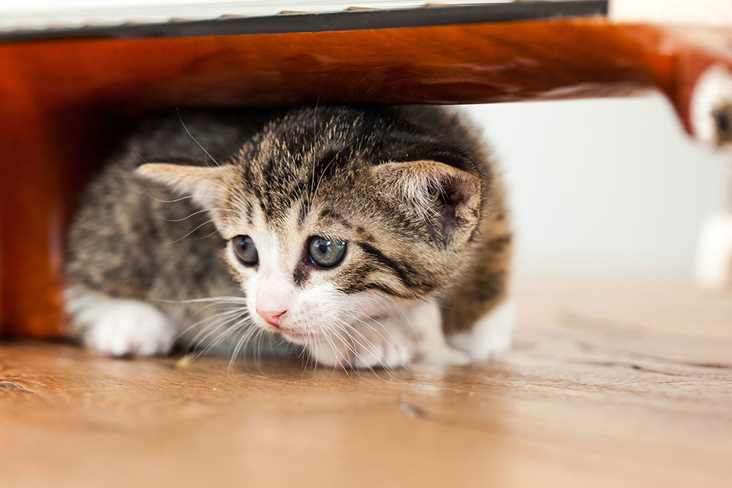
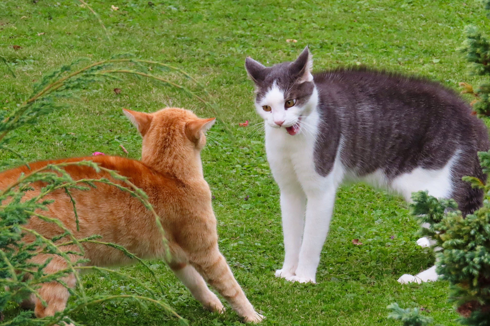
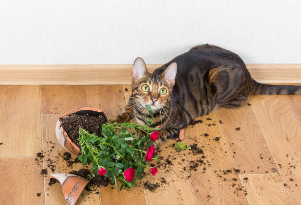

Cada uno de nosotros es único C:
El Juguetón
Soy el rey de la diversión. Siempre estoy buscando una pelota para perseguir o un juguete para morder. La vida es un juego interminable para mí.

El Observador
Prefiero estar en las sombras, observando todo lo que sucede a mi alrededor. No me meto en problemas, pero no te equivoques, estoy atento a todo.
El Curioso
Mi nariz siempre está en todas partes. Exploro cada rincón, desde cajones hasta armarios, solo para descubrir qué hay detrás de cada puerta.
El Cariñoso
Adoro a los humanos y no tengo miedo de mostrarlo. Siempre busco caricias y abrazos, y no tengo problema en ronronear para demostrar cuánto te aprecio.
El Independiente
Soy un espíritu libre. Disfruto de la compañía, pero también necesito mi tiempo y espacio personal. A veces prefiero estar solo.
El Aventurero
No hay límites para mí. Me encanta explorar el exterior, subir a árboles y descubrir nuevos lugares. El mundo es mi parque de juegos.
El Reservado
Soy un poco tímido y me toma tiempo abrirme a nuevas personas o situaciones. Pero una vez que confío en ti, sé que seremos amigos de por vida.
El Elegante
Siempre estoy en busca de la comodidad y la belleza. Me encanta encontrar el lugar perfecto para echar una siesta y mantenerme impecable.

El Territorial
Defiendo mi territorio con uñas y dientes. No me gusta que otros gatos o intrusos se acerquen a lo que considero mío.
El Travieso
Siempre busco meterme en problemas. Desde voltear objetos hasta esconder cosas, mantengo a todos en alerta constante.
" Recuerda, estas personalidades pueden variar de un gato a otro e incluso dentro del mismo gato en diferentes momentos. ¡Miau-cha diversidad felina! "